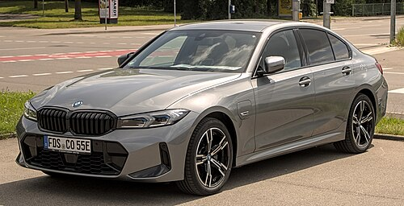

this is homework

my way (frank sinatra)
ეს სიმღერა მომწონს იმიტომ რომ ფრანკ სენატრა კარგი მომღერალია

ეს სიმღერა მომწონს იმიტომ რომ სახალისოა
არ ვიცი რატომ დავდე ეს მუსიკა,არ მომწონს უუბრალოდ მეზარება რომ სხვა ვიპოვო
movies
django unchaned
კარგი ფილმია და კარგი პერსონაჟებია
terminator 2
საინტერესო ფილმია და ბოლო ბრძოლა მომეწონა
the good,the bad, and the ugly
ეს ფილმი ძალიან მომწონს რადგან კარგი მუსიკა აქვს,კარგი პერსონაჟები და კარგი კადრები
cars
bmw G20
(from wiki) The seventh generation of the BMW 3 Series range consists of the BMW G20 (sedan version) and BMW G21 (wagon version, marketed as 'Touring') compact executive cars. The G20/G21 has been in production since mid-October 2018 with a facelift in July 2022 and is often collectively referred to as the G20.
audi A4

(from wiki) The Audi A4 is a line of luxury compact executive cars produced from 1994 to 2025 by the German car manufacturer Audi, a subsidiary of the Volkswagen Group. The A4 has been built in five generations and is based on the Volkswagen Group B platform. The first generation A4 succeeded the Audi 80. The automaker's internal numbering treats the A4 as a continuation of the Audi 80 lineage, with the initial A4 designated as the B5-series, followed by the B6, B7, B8, and the B9.
mercedes c class

(from wiki) The Mercedes-Benz C-Class is a series of compact executive cars produced by Mercedes-Benz Group AG. Introduced in 1993 as a replacement for the 190 (W201) range, the C-Class was the smallest model in the marque's line-up until the W168 A-Class arrived in 1997 . The C-Class has been available with a "4MATIC" four-wheel drive option since 2002. The third generation (W204) was launched in 2007 while the current W206 generation was launched in 2021.
ქართული მკეძები
აჭარული ხაჭაპური

1. საფუარზე მომზადებული რბილი ცომი 500 გრ (რეცეპტი იხილეთ ქვემოთ, დამატებით ინფორმაციაში); 2. ყველი 600 იმერული, ნაკლებ მარილიანი, რძით შეთხელებული; 3. ყველი უცხოეთში მცხოვრებლებისათვის 200 გრ. ფეტა, 200 გრ. ხაჭო, 100 გრ. მოცარელა, 50 გრ კარაქი, 50 მლ.ლ. რძე; 4. კვერცხი 3 ცალი;
ხინკალი
შერეული ფარში - 1 კგ ხახვი - 3 თავი მარილი წითელი წიწაკა, დაფქული ძირა წყალი
იმერული ხაჭაპური

კვერცხი - 2.00 ცალი ყველი (ნაკლებად მარილიანი) გადადუღებული თბილი წყალი - 0.5 ლ მარილი - 0.5 სკ საფუარი - 1.00 სკ ფქვილი - 1.00 კგ